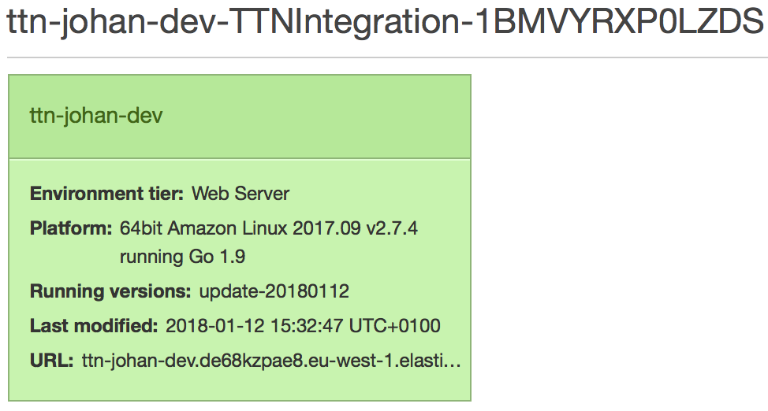

Are you encountering issues with the AWS IoT integration? This guide walks you through viewing health and getting log files of the integration that may help resolving issues.
Check Health #
- Update the integration to the latest version
- Log in to the AWS Management Console
- In Services under Compute, go to Elastic Beanstalk
- Find your application

- Click the tile of your environment
- You may see degraded health here. Click the Causes button for diagnosis
Get Log Files #
- Go to the Elastic Beanstalk environment of your application (see above)
- Click Logs in the menu on the left
- Click Request Logs and click Last 100 Lines

- Click the Download link of last 100 lines requested
- The logs of the integration process can be found under:
/var/log/app-1.error.log/var/log/app-1.log
Healthy logs look as follows:
-------------------------------------
/var/log/app-1.error.log
-------------------------------------
(empty)
-------------------------------------
/var/log/app-1.log
-------------------------------------
INFO Published uplink DevID=node
INFO Updated shadow reported state DevID=node
INFO Published uplink DevID=node
INFO Updated shadow reported state DevID=node
...
Any WARN, ERROR or FATAL should provide enough context to resolve the issue, e.g. wrong authentication parameters (app ID or access key), wrong thing attributes, etc.